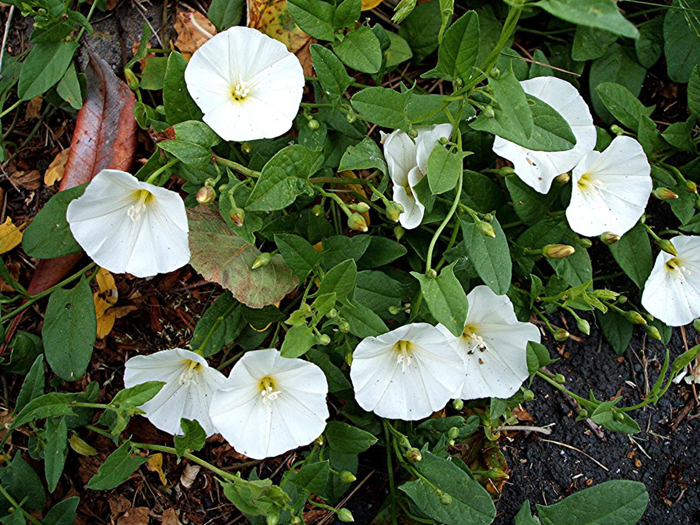

Basonym of Drug
Shankhapushpi
Main Synonym
- Sankhahuli
- Mangalykusuma
- Kshirapushpi
Regional Name
- Gujarati: Sankhavali
- Hindi: Sankhahuli
- Marathi: Sankhvel
- Telugu: Sankhpushpi
- English: English Speed Wheel
Botanical Name
Convolvulus pluricaulis Chois
Family
External Morphology
A small prostate herb
Useful Parts
- Whole Plant
- Root
- Seeds
- Alkali
Important Phytoconstituent
- Beta-sitosterol
- Kaempferol
- Sankhapushpine
- Cinnamic Acid
Rasa Panchak
- Rasa: Snigdha, Pichhila
- Guna: Snigdha, Pichhila
- Virya: Shita
- Vipaka: Madhura
Action
Therapeutic Indication
- Medhya (Boost Cognitive Power)
- Swarya (Good for Throat)
- Rasayana (Rejuvenating)
- Apasmarhara (Anti-epileptic)
- Sothahara (Anti-inflammatory)
Therapeutic Uses
- Swarabheda: Leaves fumes are beneficial in chronic cough and hoarseness of voice.
- Anindra: Phant preparation (hot infusion) is beneficial in insomnia.
- Raktavamana: Fresh juice is useful to treat haematemesis.
Dose
- Juice - 20-40 ml
- Powder - 3-5 gm
- Hot Infusion - 40-80 ml
Formulations
- Sankhpushpi Taila
- Sankhapushpi Rasyana
Adverse Effect
Not Known
Remedial Measure
Not Required